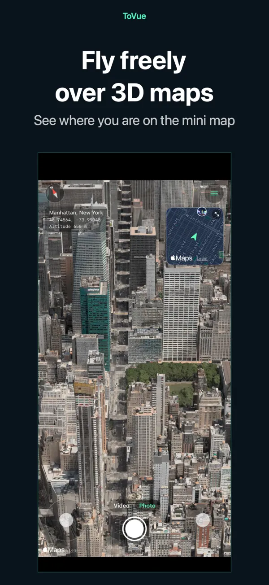
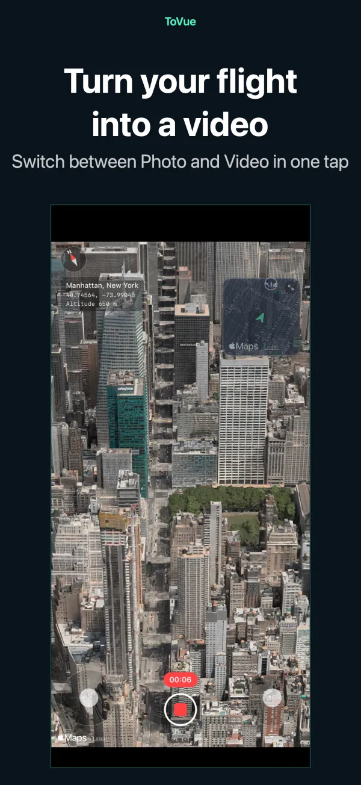
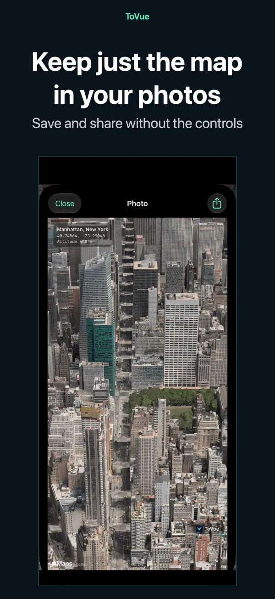
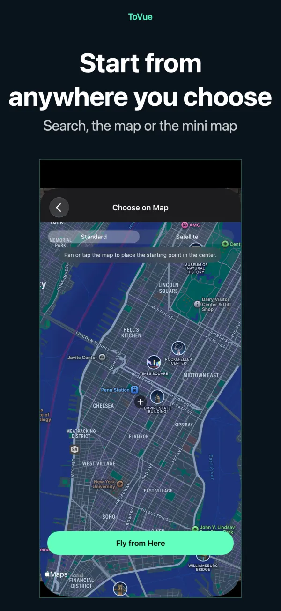
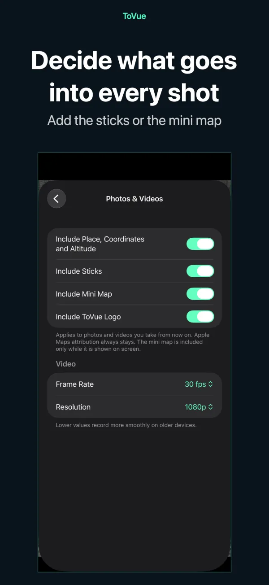

Fly 3D maps like a drone.
Soar over the world's cities on iPhone and iPad.
Keep the view as a photo or a video — just the map, without the controls.
 Free · No sign-up · No location access
Free · No sign-up · No location accessWhat you can do
Fly with the sticks and keep the view exactly as you see it.
Fly freely
Climb, turn and move with two on-screen sticks — or fly with one finger in One-Hand Mode.
Mini map
See where you are and which way you face. Tap it to pick a new place on the map.
Record video
Switch between Photo and Video like the Camera app and record your flight.
Map-only photos
Capture the view without the controls, with optional place, coordinates and altitude.
Go anywhere
Search or pick a spot on the map and start flying from there instantly.
11 languages
English, Japanese, Chinese, Korean and more. For iPhone and iPad.
Screenshots





Pricing
Everything is free to use. Prefer no ads? Buy once.
Basic
- All flight, photo and video features
- Banner ad and a full-screen ad after moving
- ToVue logo on photos and videos
Remove Ads & ToVue Logo
- A single purchase, not a subscription
- No ads at all
- Option to remove the ToVue logo from photos and videos
Good to know
- ToVue is a virtual map viewer. It does not control a real drone and is not a navigation or flight-planning tool.
- 3D buildings and terrain come from Apple Maps and vary in detail by area.
- An internet connection is required. ToVue never uses GPS or asks for your location.
- Apple Maps attribution always stays on photos and videos.
Go capture the view from the sky.
Free · No sign-up · No location access